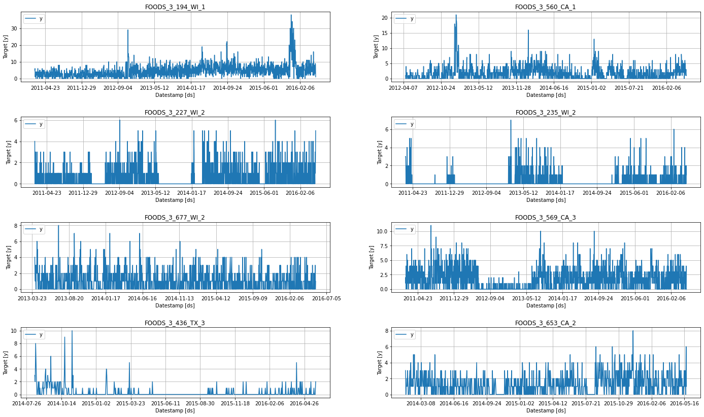
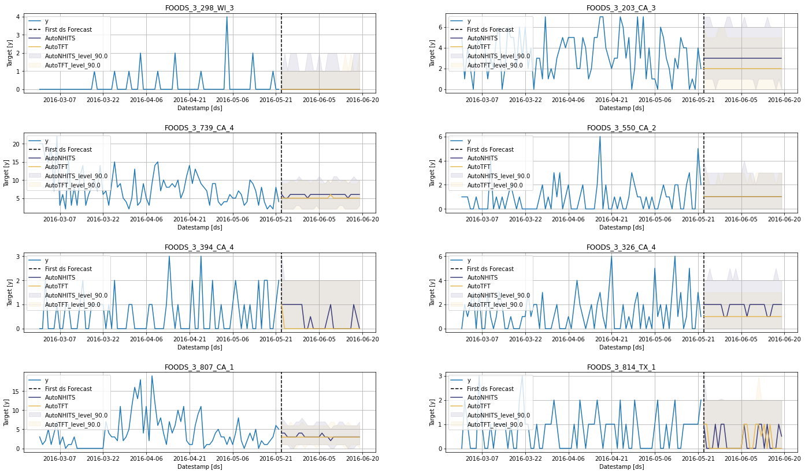
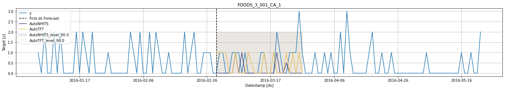
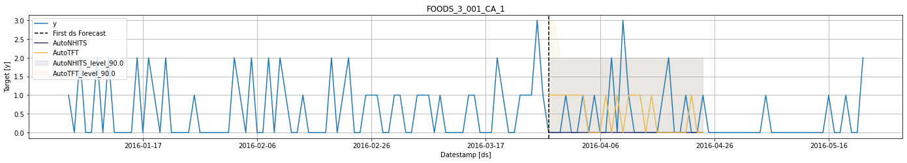
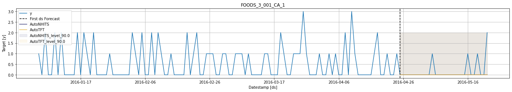

!pip install neuralforecast statsforecast s3fs fastparquetIntermittent or Sparse Time Series (M5 Walmart)
In this notebook, we’ll implement models for intermittent or sparse data using the M5 dataset.
Intermittent or sparse data has very few non-zero observations. This type of data is hard to forecast because the zero values increase the uncertainty about the underlying patterns in the data. Furthermore, once a non-zero observation occurs, there can be considerable variation in its size. Intermittent time series are common in many industries, including finance, retail, transportation, and energy. Given the ubiquity of this type of series, special methods have been developed to forecast them. The first was from Croston (1972), followed by several variants and by different aggregation frameworks.
The models of NeuralForecast can be trained to model sparse or intermittent time series using a Poisson distribution loss. By the end of this tutorial, you’ll have a good understanding of these models and how to use them.
Outline:
- Install libraries
- Load and explore the data
- Train models for intermittent data
- Perform Cross Validation
Tip
You can use Colab to run this Notebook interactively 
Warning
To reduce the computation time, it is recommended to use GPU. Using Colab, do not forget to activate it. Just go to Runtime>Change runtime type and select GPU as hardware accelerator.
1. Install libraries
We assume that you have NeuralForecast already installed. If not, check this guide for instructions on how to install NeuralForecast
Install the necessary packages using pip install neuralforecast
2. Load and explore the data
For this example, we’ll use a subset of the M5 Competition dataset. Each time series represents the unit sales of a particular product in a given Walmart store. At this level (product-store), most of the data is intermittent. We first need to import the data.
import pandas as pd
from statsforecast import StatsForecast as sf/usr/local/lib/python3.8/dist-packages/statsforecast/core.py:21: TqdmExperimentalWarning: Using `tqdm.autonotebook.tqdm` in notebook mode. Use `tqdm.tqdm` instead to force console mode (e.g. in jupyter console)
from tqdm.autonotebook import tqdmY_df = pd.read_parquet('https://m5-benchmarks.s3.amazonaws.com/data/train/target.parquet')
Y_df = Y_df.rename(columns={
'item_id': 'unique_id',
'timestamp': 'ds',
'demand': 'y'
})
Y_df['ds'] = pd.to_datetime(Y_df['ds'])For simplicity sake we will keep just one category
Y_df = Y_df.query('unique_id.str.startswith("FOODS_3")')
Y_df['unique_id'] = Y_df['unique_id'].astype(str)
Y_df = Y_df.reset_index(drop=True)Plot some series using the plot method from the StatsForecast class. This method prints 8 random series from the dataset and is useful for basic EDA.
sf.plot(Y_df, engine='matplotlib')
3. Train models for intermittent data
from ray import tune
from neuralforecast import NeuralForecast
from neuralforecast.auto import AutoNHITS, AutoTFT
from neuralforecast.losses.pytorch import DistributionLossEach Auto model contains a default search space that was extensively tested on multiple large-scale datasets. Additionally, users can define specific search spaces tailored for particular datasets and tasks.
First, we create a custom search space for the AutoNHITS and AutoTFT models. Search spaces are specified with dictionaries, where keys corresponds to the model’s hyperparameter and the value is a Tune function to specify how the hyperparameter will be sampled. For example, use randint to sample integers uniformly, and choice to sample values of a list.
config_nhits = {
"input_size": tune.choice([28, 28*2, 28*3, 28*5]), # Length of input window
"n_blocks": 5*[1], # Length of input window
"mlp_units": 5 * [[512, 512]], # Length of input window
"n_pool_kernel_size": tune.choice([5*[1], 5*[2], 5*[4],
[8, 4, 2, 1, 1]]), # MaxPooling Kernel size
"n_freq_downsample": tune.choice([[8, 4, 2, 1, 1],
[1, 1, 1, 1, 1]]), # Interpolation expressivity ratios
"learning_rate": tune.loguniform(1e-4, 1e-2), # Initial Learning rate
"scaler_type": tune.choice([None]), # Scaler type
"max_steps": tune.choice([1000]), # Max number of training iterations
"batch_size": tune.choice([32, 64, 128, 256]), # Number of series in batch
"windows_batch_size": tune.choice([128, 256, 512, 1024]), # Number of windows in batch
"random_seed": tune.randint(1, 20), # Random seed
}
config_tft = {
"input_size": tune.choice([28, 28*2, 28*3]), # Length of input window
"hidden_size": tune.choice([64, 128, 256]), # Size of embeddings and encoders
"learning_rate": tune.loguniform(1e-4, 1e-2), # Initial learning rate
"scaler_type": tune.choice([None]), # Scaler type
"max_steps": tune.choice([500, 1000]), # Max number of training iterations
"batch_size": tune.choice([32, 64, 128, 256]), # Number of series in batch
"windows_batch_size": tune.choice([128, 256, 512, 1024]), # Number of windows in batch
"random_seed": tune.randint(1, 20), # Random seed
}To instantiate an Auto model you need to define:
h: forecasting horizon.loss: training and validation loss fromneuralforecast.losses.pytorch.config: hyperparameter search space. IfNone, theAutoclass will use a pre-defined suggested hyperparameter space.search_alg: search algorithm (fromtune.search), default is random search. Refer to https://docs.ray.io/en/latest/tune/api_docs/suggestion.html for more information on the different search algorithm options.num_samples: number of configurations explored.
In this example we set horizon h as 28, use the Poisson distribution loss (ideal for count data) for training and validation, and use the default search algorithm.
nf = NeuralForecast(
models=[
AutoNHITS(h=28, config=config_nhits, loss=DistributionLoss(distribution='Poisson', level=[80, 90], return_params=False), num_samples=5),
AutoTFT(h=28, config=config_tft, loss=DistributionLoss(distribution='Poisson', level=[80, 90], return_params=False), num_samples=2),
],
freq='D'
)
Tip
The number of samples, num_samples, is a crucial parameter! Larger values will usually produce better results as we explore more configurations in the search space, but it will increase training times. Larger search spaces will usually require more samples. As a general rule, we recommend setting num_samples higher than 20.
Next, we use the Neuralforecast class to train the Auto model. In this step, Auto models will automatically perform hyperparamter tuning training multiple models with different hyperparameters, producing the forecasts on the validation set, and evaluating them. The best configuration is selected based on the error on a validation set. Only the best model is stored and used during inference.
nf.fit(df=Y_df)Next, we use the predict method to forecast the next 28 days using the optimal hyperparameters.
fcst_df = nf.predict()fcst_df.columns = fcst_df.columns.str.replace('-median', '')sf.plot(Y_df, fcst_df, engine='matplotlib', max_insample_length=28 * 3)
4. Cross Validation
Time series cross-validation is a method for evaluating how a model would have performed in the past. It works by defining a sliding window across the historical data and predicting the period following it.

NeuralForecast has an implementation of time series cross-validation that is fast and easy to use.
The cross_validation method from the NeuralForecast class takes the following arguments.
df: training data framestep_size(int): step size between each window. In other words: how often do you want to run the forecasting processes.n_windows(int): number of windows used for cross validation. In other words: what number of forecasting processes in the past do you want to evaluate.
nf = NeuralForecast(
models=[
AutoNHITS(h=28, config=config_nhits, loss=DistributionLoss(distribution='Poisson', level=[80, 90], return_params=False), num_samples=5),
AutoTFT(h=28, config=config_tft, loss=DistributionLoss(distribution='Poisson', level=[80, 90], return_params=False), num_samples=2),
],
freq='D'
)cv_df = nf.cross_validation(Y_df, n_windows=3, step_size=28)The cv_df object is a new data frame that includes the following columns:
unique_idindex: (If you dont like working with index just run forecasts_cv_df.resetindex())ds: datestamp or temporal indexcutoff: the last datestamp or temporal index for the n_windows. If n_windows=1, then one unique cuttoff value, if n_windows=2 then two unique cutoff values.y: true value"model": columns with the model’s name and fitted value.
cv_df.columns = cv_df.columns.str.replace('-median', '')cv_df.head()| unique_id | ds | cutoff | AutoNHITS | AutoNHITS-lo-90.0 | AutoNHITS-lo-80.0 | AutoNHITS-hi-80.0 | AutoNHITS-hi-90.0 | AutoTFT | AutoTFT-lo-90.0 | AutoTFT-lo-80.0 | AutoTFT-hi-80.0 | AutoTFT-hi-90.0 | y | |
|---|---|---|---|---|---|---|---|---|---|---|---|---|---|---|
| 0 | FOODS_3_001_CA_1 | 2016-02-29 | 2016-02-28 | 0.0 | 0.0 | 0.0 | 2.0 | 2.0 | 1.0 | 0.0 | 0.0 | 2.0 | 2.0 | 0.0 |
| 1 | FOODS_3_001_CA_1 | 2016-03-01 | 2016-02-28 | 0.0 | 0.0 | 0.0 | 2.0 | 2.0 | 1.0 | 0.0 | 0.0 | 2.0 | 2.0 | 1.0 |
| 2 | FOODS_3_001_CA_1 | 2016-03-02 | 2016-02-28 | 0.0 | 0.0 | 0.0 | 2.0 | 2.0 | 1.0 | 0.0 | 0.0 | 2.0 | 2.0 | 1.0 |
| 3 | FOODS_3_001_CA_1 | 2016-03-03 | 2016-02-28 | 0.0 | 0.0 | 0.0 | 2.0 | 2.0 | 1.0 | 0.0 | 0.0 | 2.0 | 2.0 | 0.0 |
| 4 | FOODS_3_001_CA_1 | 2016-03-04 | 2016-02-28 | 0.0 | 0.0 | 0.0 | 2.0 | 2.0 | 0.0 | 0.0 | 0.0 | 2.0 | 2.0 | 0.0 |
for cutoff in cv_df['cutoff'].unique():
sf.plot(Y_df,
cv_df.query('cutoff == @cutoff').drop(columns=['y', 'cutoff']),
max_insample_length=28 * 5,
unique_ids=['FOODS_3_001_CA_1'],
engine='matplotlib')


Evaluate
In this section we will evaluate the performance of each model each cross validation window using the MSE metric.
from neuralforecast.losses.numpy import mse, maedef evaluate(df):
eval_ = {}
models = df.loc[:, ~df.columns.str.contains('unique_id|y|ds|cutoff|lo|hi')].columns
for model in models:
eval_[model] = {}
for metric in [mse, mae]:
eval_[model][metric.__name__] = metric(df['y'].values, df[model].values)
eval_df = pd.DataFrame(eval_).rename_axis('metric')
return eval_dfcv_df.groupby('cutoff').apply(lambda df: evaluate(df))| AutoNHITS | AutoTFT | ||
|---|---|---|---|
| cutoff | metric | ||
| 2016-02-28 | mse | 10.274085 | 15.240116 |
| mae | 1.445398 | 1.511810 | |
| 2016-03-27 | mse | 9.533789 | 14.307356 |
| mae | 1.445806 | 1.520717 | |
| 2016-04-24 | mse | 9.561473 | 14.719155 |
| mae | 1.455149 | 1.534106 |
References
- Croston, J. D. (1972). Forecasting and stock control for intermittent demands. Journal of the Operational Research Society, 23(3), 289-303.
- Cristian Challu, Kin G. Olivares, Boris N. Oreshkin, Federico Garza, Max Mergenthaler-Canseco, Artur Dubrawski (2021). N-HiTS: Neural Hierarchical Interpolation for Time Series Forecasting. Accepted at AAAI 2023.
Give us a ⭐ on Github